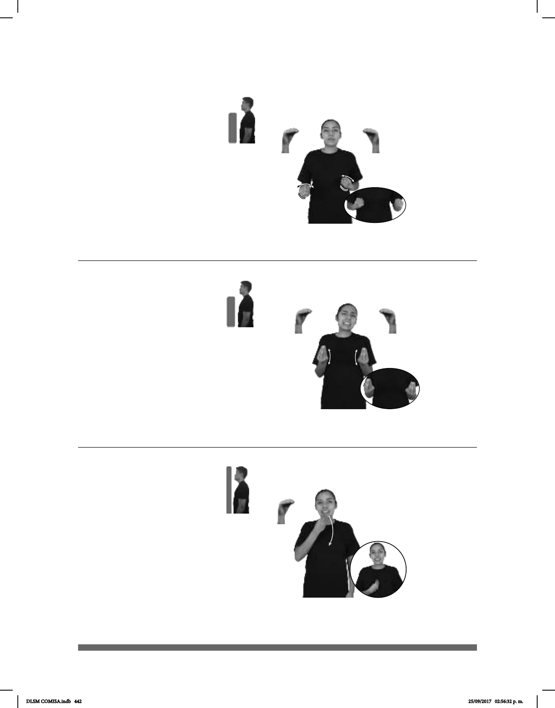

442
Seña: SB
MD y MB O.5
MD y MB palmas
hacia abajo.
MD y MB a la altura
del abdomen.
Movimiento: MD y MB recto
hacia el frente alternadamente.
v. tr. Hacer que algo o
alguien deje el lugar o la posición
en que estaba y pase a otro lugar o
posición.
Mover (O-43)
VECINO él-PEDIR-a-mí pos-MI CARRO MOVER CL: “Y’”
El vecino me pidió mover mi carro.
Seña: SS
O.5
Palmas hacia arriba.
Del pecho al abdomen.
Movimiento: Recto repetidamente.
Boca abierta y
mostrando los dientes.
1. adj. y pron. Que es
abundante, numeroso o de mayor
cantidad que lo normal. 2. adj. Que
está formado por un gran número de
elementos.
pro-YO TENER ESCUELA MUCHO AMIGO++
Tengo muchos amigos en la escuela.
Muchos, chas / Numerosos, sas (A) (O-44)
Seña: SM
O.5
Palma hacia adentro.
La mano inicia sobre la
barbilla y termina sobre el pecho.
Movimiento: La mano simula un salto.
Boca abierta y
mostrando los dientes.
1. loc. adv. Sin remedio, sin
otra posibilidad o sin que pueda hacerse
otra cosa; expresa también indiferencia
por lo sucedido. 2. Expresa una
objeción que no impide el desarrollo de
la acción principal.
APUESTA NI-MODO pro-YO PERDER
Perdí la apuesta, ni modo.
Ni modo
1
2
(O-45)
DLSM COMISA.indb 442 25/09/2017 02:56:32 p. m.